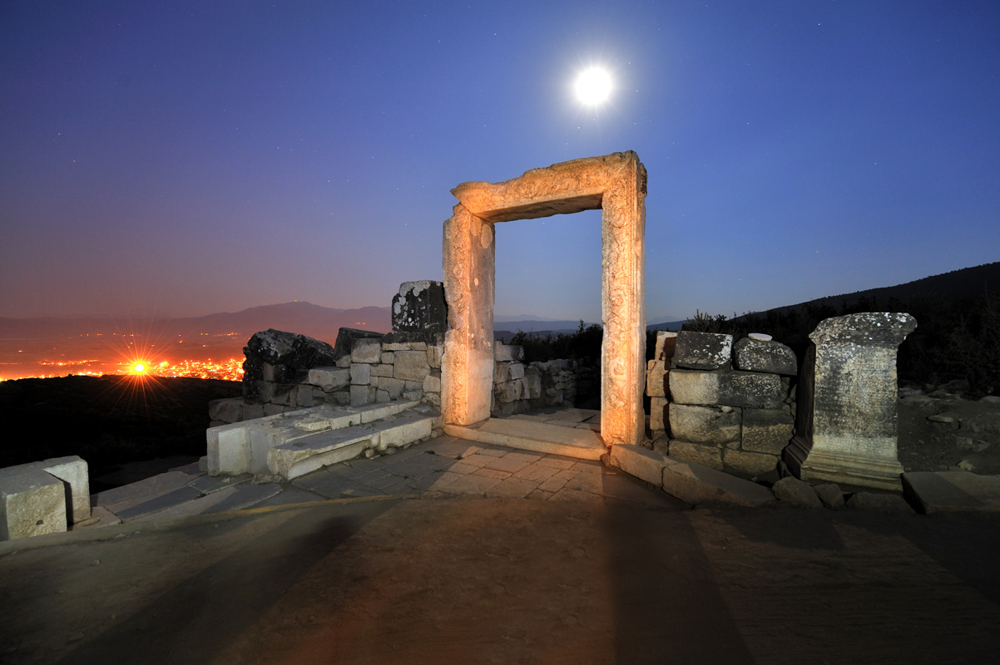

Tarihçe
Burdur sarp dağların çevrelediği geniş ve sulak ovalarıyla salt çağdaş Anadolu’nun değil, antik çağların da önemli yerleşim alanlarından biridir. Gerçekten de şu ya da bu biçimde örgütlenmiş ilk yerleşimci topluluklardan, gösterişli sütunlarla bezenmiş geniş meydanlara sahip görkemli kentlere değin farklı süreçlere tanıklık eden Burdur kültür tarihi, Anadolu arkeolojisinde hatrı sayılır bir yere sahiptir. Gölhisar, Burdur ilinin ikinci büyük ilçesidir. Yaylalar Diyarı olarak da adlandırılır. Tarımın en etkin yapıldığı ilçedir. Pancar, anason, tahıllar, sebze ve meyve yetiştirilmektedir. Son zamanlarda seracılık yaygınlaşmıştır. Sera da domestes biber salatalık vb yaz sebzeleri yetiştirilir. Gölhisar Ovası bir çökelti ovası olup, Dalaman Çayı üzerinde kurulan Yapraklı Barajı'nın suları ile sulanmaktadır. Dalaman çayı bu topraklardan doğmaktadır. 20.000 nüfuslu ilçenin Kibyra adında tarihi antik kenti bulunmaktadır. Yöre teke yöresinin en önemli müzik ve folklor kültürlerini barındırmaktadır. Gölhisar İlçesi Burdur ilinin güneybatısında Burdur'a 107, Denizli'ye 90 Fethiye'ye 111, Antalya'ya 135 km uzaklıkta Batı Torosların eteklerinde Dalaman Çayı Su Toplama Havzasında kurulmuş, Burdur ilinin ikinci büyük ilçesidir. Ortalama rakımı 945 metre, yüzölçümü 575,820 kilometrekaredir. Gölhisar, Uluköy ile Horzum Mahallesinin birleşmesiyle 13 Ocak 1953 tarihinde ilçe olmuştur. Aynı gün TRT Ankara Radyosunda ilan edilmiştir. Adını ilçeye 6 km uzaklıktaki gölün ortasındaki adada inşa edilmiş olan kaleden (hisar) almıştır. İlçe konum olarak Burdur, Denizli, Muğla, Antalya şehir merkezlerinin ortasında bulunmaktadır. Gölhisar’ın kuzey doğusunda Tefenni ilçesi, doğusunda Çavdır ilçesi, güneyinde Dirmil ilçesi, batısında Çameli ilçesi ve kuzey batısında Acıpayam ilçesi bulunur.
Gölhisar, Burdur ilinin ikinci büyük ilçesidir. Yaylalar Diyarı olarak da adlandırılır.
Tarımın en etkin yapıldığı ilçedir. Pancar, anason, tahıllar, sebze ve meyve yetiştirilmektedir. Son zamanlarda seracılık yaygınlaşmıştır. Sera da domestes biber salatalık vb yaz sebzeleri yetiştirilir. Gölhisar Ovası bir çökelti ovası olup, Dalaman Çayı üzerinde kurulan Yapraklı Barajı'nın suları ile sulanmaktadır. Dalaman çayı bu topraklardan doğmaktadır. 20.000 nüfuslu ilçenin Kibyra adında tarihi antik kenti bulunmaktadır. Yöre teke yöresinin en önemli müzik ve folklor kültürlerini barındırmaktadır.
Gölhisar İlçesi Burdur ilinin güneybatısında Burdur'a 107, Denizli'ye 90 Fethiye'ye 111, Antalya'ya 135 km uzaklıkta Batı Torosların eteklerinde Dalaman Çayı Su Toplama Havzasında kurulmuş, Burdur ilinin ikinci büyük ilçesidir. Ortalama rakımı 945 metre, yüzölçümü 575,820 kilometrekaredir.
Gölhisar, Uluköy ile Horzum Mahallesinin birleşmesiyle 13 Ocak 1953 tarihinde ilçe olmuştur. Aynı gün TRT Ankara Radyosunda ilan edilmiştir. Adını ilçeye 6 km uzaklıktaki gölün ortasındaki adada inşa edilmiş olan kaleden (hisar) almıştır.
İlçe konum olarak Burdur, Denizli, Muğla, Antalya şehir merkezlerinin ortasında bulunmaktadır. Gölhisar’ın kuzey doğusunda Tefenni ilçesi, doğusunda Çavdır ilçesi, güneyinde Dirmil ilçesi, batısında Çameli ilçesi ve kuzey batısında Acıpayam ilçesi bulunur.
Gölhisar Burdur ilinin güneybatısında ve Burdur'a 107 Km uzaklıktadır. İlçenin tarihi çok eski çağlara dayanmaktadır. Cbyra – Tetrapul (4 şehir) harabelerinin bulunduğu mevkide 4 şehrin idare merkezi olmuştur. Bu şehirler Cbyra, Bubon, Balbura ve İnuanda'dır. Bu şehirlerin milattan 1000 yıl önce Girit'ten gelen Pisidialılar tarafından kurulduğu ünlü tarihçi Heredot'un kayıtlarından anlaşılmaktadır. Cbyra daha sonra Romalıların idare merkezi olmuştur. Bu gün kalıntılar hala mevcut olup, bunlardan en önemlisi 90m yarıçapında olan tiyatrodur.
Gölhisar 14. yüzyılın başlarında Hamitoğulları 1389 yılında da Osmanoğulları egemenliğine girmiştir. Gölhisar Armutlu ve Horzum köylerinin birleştirilmesi ile 3 Mart 1953 tarihinde ilçe olmuştur. Adını Hamitoğulları tarafından Uylupınar Gölü'nün ortasında yapılan kaleden (hisar) almaktadır.